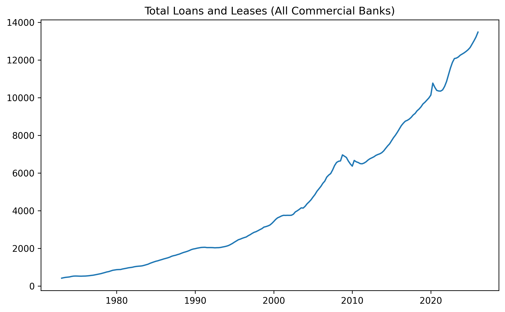
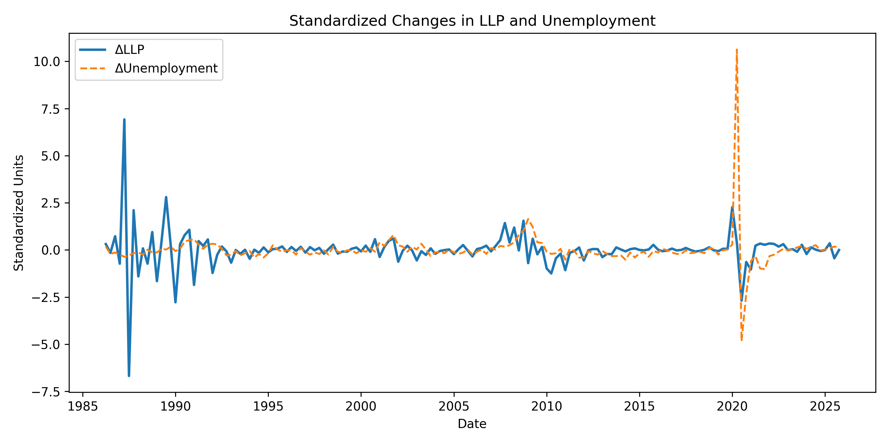
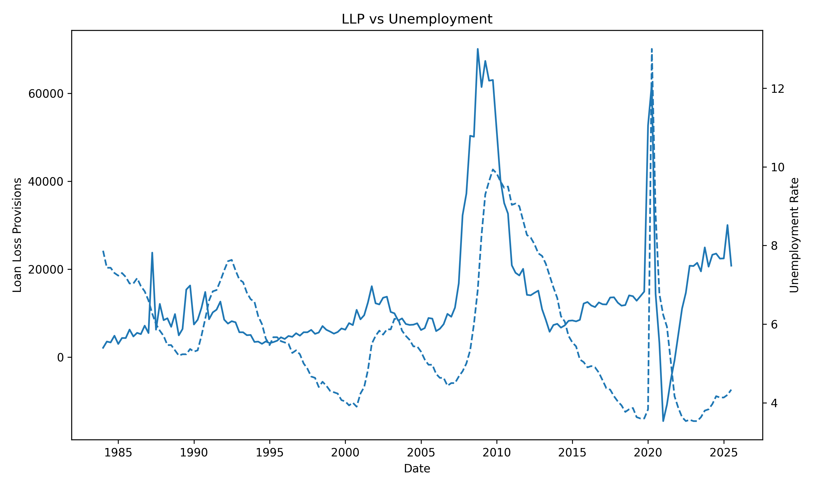

Loan Loss Provisions: Anticipatory or Reactionary?
A Macro-Information Responsiveness Analysis
A Bank to us is:
- A place to store money securely
- A place to borrow money for big purchases
- A place to invest money for growth
A Bank is a Business:
- The loans you take out are their products
- Banks make money by lending money, and charging for this service in the form of interest
- This type of product is risky however, sometimes people don’t pay back their loans
Imagine this Scenario:
- A bank loans out 1 million dollars to 100 customers
- Each customer is expected to pay back $10,000 with interest
- Because loans are risky, it’s an overestimation to say that all 100 customers will pay back their loans
Loan Loss Provisions (LLP)
- To prepare for potential losses, banks set aside a portion of their profits as an “Allowance for Loan Losses” (ALL)
- Loan loss provisioning is the process of estimating, adjusting and recording this allowance
- It acts as a financial buffer to absorb potential losses from defaulted loans
Simple Idea:
- If banks expect more losses in the future -> they will increase their LLP
- If risk looks low -> they will decrease their LLP
Loan Losses are Time Sensitive:
- When faced with increasing risk, banks must adjust their LLP to mitigate potential losses
- Banks can try to anticipate future losses
- Or they can react to losses once they are visible
If Banks Adjust too Early:
- They might over-provision, which can reduce profitability and competitiveness
- Risk may be overestimated, leading to inefficient capital allocation
- It can signal to the market that the bank is in trouble, even if it isn’t
- Fear of missing out / being left behind
If Banks Adjust too Late:
- Losses appear suddenly, causing financial instability
- Profits drop sharply, compromising investor confidence
- Exposure to risk increases, potentially threatening the bank’s long-term viability
- Fear of not getting out
If Banks had Perfect Foresight:
- They would adjust their LLP perfectly in line with future losses
- They would recognize risk and adjust before these losses occur
- They would anticipate signals ahead of their competition, freeing up captial during good times, and building up buffers during bad times
The Reality:
- Banks have imperfect information about the future, and must rely on noisy/uncertain signals to guide their decisions
- Acting too early isn’t always a safe bet, it has costs
- LLP only adjusts quarterly, meaning a natural delay and potential to miss signals
Research Question
How do banks adjust loan loss provisions over time?
- Do banks anticipate economic downturns?
- Do they react after conditions worsen?
- Or do they adjust at the same time as the economy changes?
Secondary Question
- What role can data science play in improving how banks recognize risk and set provisions?
How Do We Study This?
We want to understand when LLP responds to economic changes via a multi-signal, time-series analysis
- Not just whether economic changes variables are related to LLP
- But how that relationship unfolds over time
What Do We Mean by Economic Changes?
Loan repayment is a conflux of economic factors…
We use a small set of indicators to capture different limitations on borrowers’ ability to repay, and include metrics that signal credit risk/financial stress
What Signals Do We Use?
We use indicators capturing different dimensions of risk:
Unemployment Rate
- Measures the share of the labor force without a job
Why it matters
- Job loss reduces borrowers’ ability to repay loans
- Higher unemployment → higher default risk
Captures household financial stress
Industrial Production
- Measures output in manufacturing, mining, and utilities
Why it matters
- Proxy for the greater economy as a whole
- Declining signal suggest slowing economic activity
- Lower output → weaker income and business conditions
Captures real economic activity
Term Spread
- Difference between long-term and short-term interest rates for U.S. Treasury bonds
Why it matters
- Reflects expectations about future economic conditions
- Inversions often precede/predict recessions
Captures economic expectations and monetary conditions
Credit Spread
- Difference between corporate bond yields and safe government yields
Why it matters
- Wider spreads indicate higher perceived default risk
- Reacts quickly to changes in financial conditions
Captures market-implied credit risk
National Financial Conditions Index (NFCI)
- Composite index of financial market stress
Why it matters
- Aggregates information from credit, leverage, and risk markets
- Increases during periods of financial instability
Captures system-wide financial conditions
Small Business Optimism Index
- Survey-based measure of business expectations
Why it matters
- Reflects expectations about hiring, sales, and growth
- Provides a forward-looking view of economic conditions
Captures business sentiment and expectations
From Economic Signals to Analysis
- We now have a set of indicators capturing different types of risk
The key question becomes:
How does LLP respond to these signals over time?
The Core Challenge
- Economic variables and LLP are both time series
- Relationships are not instantaneous
→ Responses may occur:
- Immediately
- With delay
- Or even in advance
→ We need a framework to capture timing
Our Approach
We use a simple - 3 step - time-series framework to study:
- When LLP responds
- How strongly it responds
- How long responses persist
→ Focus is on dynamic relationships, not prediction
Step 1 — Focus on Changes
- We convert all variables into quarterly changes
Why?

- Removes long-term trends like bank sector growth
- Makes variables comparable
- Isolates adjustment behavior in the face of changing conditions
Step 2 — Introduce Timing
We compare LLP today to:
- Current values of macro variables
- Past values (lags)
- Future values (leads)
Leads and Lags
Lagged variables
→ Does LLP respond after changes occur?
Contemporaneous variables
→ Does LLP move at the same time?
Lead variables
→ Does LLP move before changes occur?
→ This allows us to test anticipation vs reaction
Step 3 — Regression Framework
We estimate relationships of the form:
- Changes in LLP explained by
- current signals
- past signals
- future signals
→ This captures how LLP evolves across time
What Are We Looking For?
Prediciting LLP is not within the scope of this analysis.
We are interested in:
- Timing of responses
- Direction of relationships
- Consistency across variables
→ Do banks recognize risk early, on time, or late?
Why This Framework Works
- LLP is a dynamic adjustment process
- Economic signals evolve over time
→ This framework allows us to observe:
- Information processing
- Delays in response
- Evidence of anticipation
At each point in time:
- We ask:
→ When a macro variable changes, how does LLP respond?
The regression quantifies this relationship
→ The regression helps us trace:
- How information is processed
- How quickly banks react
- Whether they anticipate future risk
Interpreting the Results
Each coefficient tells us:
Direction
→ Does LLP increase or decrease?
Timing
→ Does the response happen before, during, or after?
Strength
→ How large is the response?
Model Choice
- OLS provides a baseline, interpretable framework
Allows us to isolate:
- Timing effects
- Direction of relationships
- Consistency across variables
→ More complex models can be explored later
→ But OLS is ideal for initial structural understanding
Why Not More Complex Models?
Tradeoff:
- Complex models → better fit
- Simple models → clearer insight
Our Priority
→ The priority is understanding behavior, not maximizing accuracy
OLS is natural for our goals
Results Overview
We build our analysis in stages:
- Visual exploration
- Single-variable models
- Financial indicators
- Timing structure (lags & leads)
- Combined model
- Regime analysis
→ Goal: Understand how LLP responds over time
Visual Analysis: LLP and Unemployment

- Standardized changes allow direct comparison
- Some periods show alignment
- Other periods show divergence
- Relationship is volatile, but the shape is suggestive of a pattern
Baseline Model: Unemployment
| R² |
~0.05 |
| Key Result |
Weak relationship |
Some lagged effects are significant
No consistent timing pattern
LLP does not strongly track unemployment alone
First Insight
Real economy variables provide limited explanatory power
Suggests LLP is not driven by a single signal
Need broader, more forward-looking indicators
Credit Spread Model
| R² |
~0.04 |
| Key Result |
Weak but significant contemporaneous effect |
- Immediate response is significant
- Little persistence across lags
→ LLP reacts to financial stress, but weakly
Financial Conditions (NFCI)
| R² |
~0.23 |
| Key Result |
Stronger explanatory power |
- Significant at lag 0 and lag 2
- Clearer dynamic pattern
→ Financial conditions better explain LLP behavior
Combining Signals
- The economy is multi-dimensional
- No single variable captures overall risk
In practice:
- Banks observe many signals simultaneously
- Risk emerges from a combination of factors
- A single-variable model may miss important information
Combined Model
| R² |
~0.45 |
| Observations |
154 |
- Substantial increase in explanatory power
- Multiple variables contribute simultaneously
→ LLP responds to a combination of macro signals
Full Model (All Variables)
- Highest explanatory power observed
- Many coefficients insignificant
- Mixed signs across time
→ Model captures broad information, but lacks clarity
Interpreting the Full Model
- Many variables contain overlapping information
- Econometric pitfall of multicollinearity
Evidence:
- Loss of individual significance
- Instability across lags and leads
- Signals are highly correlated
Key Insight:
- LLP is influenced by a complex web of signals
- No single variable dominates, multivariate analysis outperforms univariate
What Mattered Most
- Financial conditions (NFCI) remain important
- Unemployment still contributes
- Other variables add noise when combined
Refocusing the Model
- The full model includes many overlapping signals
Core Model (NFCI + Unemployment)
| R² |
~0.45 |
| Observations |
~150 |
- Strong explanatory power
- More stable coefficients
- Captures the key drivers of LLP
Why Consider Regimes?
- Economic conditions are not constant over time
In particular:
- Crisis periods differ from normal periods
- Risk becomes more visible and urgent
- LLP behavior may change depending on the environment
Defining Regimes
We split the data into:
- Normal periods
- Crisis periods (e.g., 2008, COVID)
→ Allows us to test whether behavior changes under stress
Regime Analysis Method
- Extend the core model (NFCI + Unemployment)
Add interaction terms:
- Variable × Crisis indicator
→ Measures how responses differ during crisis periods
Regime Model Results
- Model fit improves further
- Several interaction terms are significant
- Evidence of different behavior in crisis periods
Crisis vs Normal Behavior
During crisis periods:
- Larger coefficient magnitudes
- More statistically significant effects
- Stronger and more persistent responses
→ LLP becomes more reactive under stress
→ Banks react more strongly when risk becomes clear
Circling back to the Research Question:
We now understand:
→ What LLP responds to
→ How responses change across environments
How did LLP respond over time?
Timing Framework
Our Core model was built to include:
- Leads (t+1, t+2) -> 1-2 quarters in advance
- Current values (t)
- Lags (t−1, t−2, t−3) -> 1-3 quarters of reaction time
→ Allows us to trace how LLP responds over time
Timing Results (Normal vs Crisis)
Financial Conditions (NFCI)
| Normal |
+ |
* |
+ |
* |
* |
* |
| Crisis Effect |
(−) |
+ |
+ |
+ |
+ |
+ |
- = significant positive
− = significant negative
( ) = marginal significance (p < 0.10)
- = not significant
Unemployment
| Normal |
* |
+ |
+ |
* |
* |
(−) |
| Crisis Effect |
− |
* |
+ |
− |
* |
+ |
- = significant positive
− = significant negative
( ) = marginal significance (p < 0.10)
- = not significant
3 Important Takeaways:
- Co-movement during crisis
- Diffuse reactions to economic shock
- Weak evidience of anticipation
Behavior Across Economic Conditions
→ Provisioning behavior varies across economic regimes
Visual Evidence

- Strong co-movement during crises (e.g., 2008)
- Contrary motion during stable periods
- Our lag/lead significance pattern is a reflection of this changing relationship
Explanation:
- When risk is low, macro signals are less relevant to provisioning decisions
- During times of stability, banks may focus on other factors (e.g., competition, profitability, business metrics)
- Fear of being left behind - When the competition is not provisioning, it increases the opportunity cost of playing safe, even if risk is increasing in the background
Diffuse Adjustment During Crises
Economic shocks trigger immediate LLP responses
Adjustments continue over multiple quarters
Effects are distributed across time in a non-deterministic way
→ LLP behaves as a multi-period adjustment process
→ Risk recognition evolves as information becomes clearer
Explanation:
- When risk becomes visible, banks adjust quickly to mitigate losses
- However, the adjustment process is not perfect or deterministic
- As conditions evolve, banks may need to adjust further, or even reverse course if conditions improve
Weak Evidence of Anticipation
Evidence on Anticipation
- Some lead terms are statistically significant
However:
- No time-period or variable with two significant leads
- No time-period or variable with two leads of the same sign
- No stable pattern across variables
→ No strong evidence of systematic anticipation
Explanation:
- To make the claim that banks anticipate risk, we would need consistent evidence of significant lead effects across multiple variables and time periods
- The lack of significant leads, and the incosistent pattern of signs, suggests that banks do not systematically adjust LLP in anticipation of future economic changes
Interpreting Lead Effects
My Theory
→ Lead significance may reflect:
- Ongoing adjustment to prior shocks
- Overlapping timing effects
→ Not true forward-looking behavior
Final Interpretation
LLP responds to worsening macroeconomic conditions, especially when crisis is unambiguous and risk is visible
Adjustments are:
- Immediate
- Gradual
- Distributed over time
Responses strengthen during shocks
Little evidence of systematic anticipation
Answer to Research Question
Do banks anticipate macroeconomic risk?
In conclusion:
Provisioning behavior is reactionary and state-dependent
Role of Data Science
- Current behavior is largely reactionary
→ Opportunity to:
- Improve early risk detection
- Incorporate forward-looking signals
- Enhance consistency in provisioning decisions
Key Takeaway
→ Loan loss provisioning is not anticipatory
→ It is a gradual, reactionary process
→ Stronger during periods of economic stress